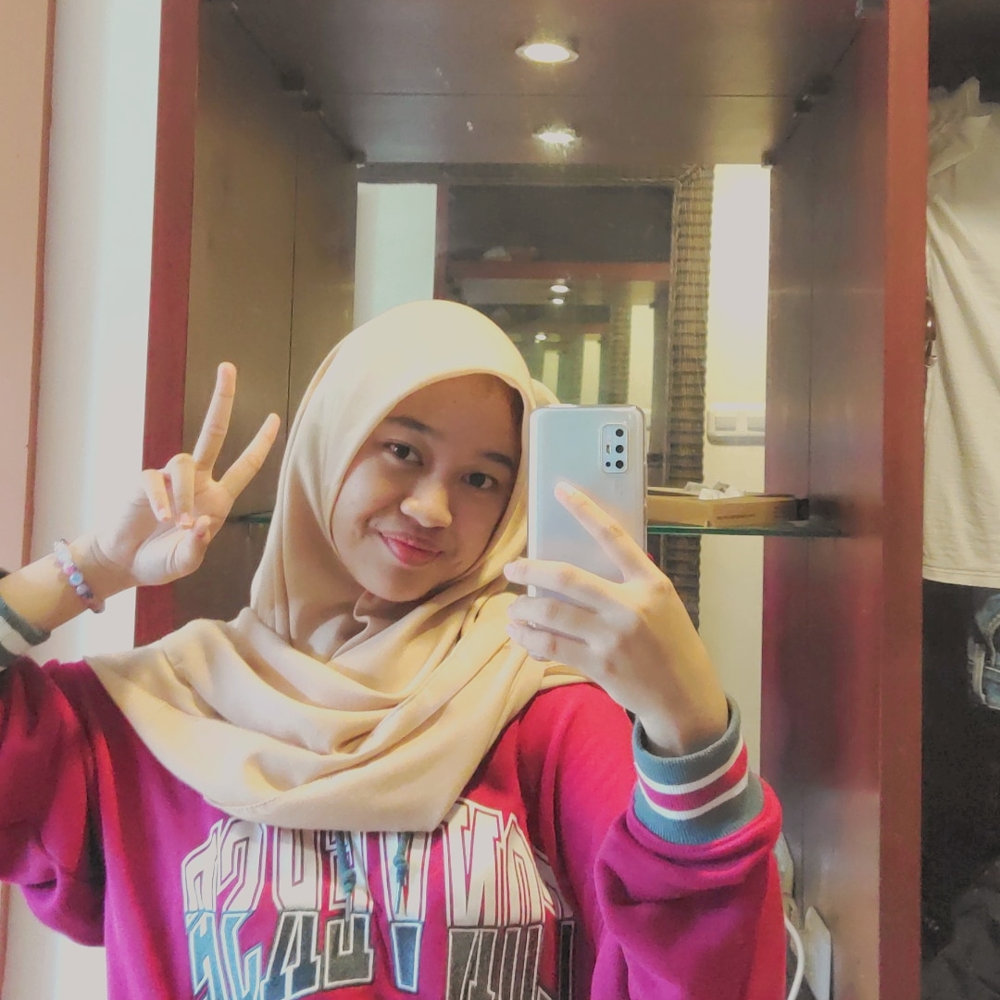

| Nama |
Kelas |
Sekolah |
Umur |
Tanggal Lahir |
Hobi |
Cita Cita |
| Audy Nasyiah Rahim |
XI-5 |
SMK-SMAK Bogor |
17 Tahun |
20 Juni 2004 |
Tidur |
Analis |

Sejak desember 2019 kemarin, virus SARS-CoV-2 ini mulai terdeteksi keberadaannya di wuhan, china. Virus ini terus berkembang
dan menyebar ke seluruh dunia hingga akhirnya menjadi pandemi. Virus Covid-19 ini mulai menyebar di Indonesia pada pertengahan maret 2020.
Akibat virus ini, aturan-aturan baru mulai diterapkan yaitu, harus menggunakan masker kemanapun kita pergi, harus meminimalisir untuk
berpegian ke ruangan publik, dan harus menjaga jarak saat di publik. Banyak instansi yang akhirnya memutuskan untuk melakukan seluruh kegiatan
lewat rumah dan ada beberapa juga yang akhirnya memutuskan untuk berhenti sementara.
Kegiatan belajar mengajar di sekolah juga diberhentikan dan dilakukan melalui online, yang disebut dengan PJJ (Pembelajaran Jarak Jauh).
Hal ini sangat berbeda dengan aktivitas yang biasa dilakukan oleh murid dan guru, yang tadinya belajar mengajar di kelas dengan media papan tulis
dan bertemu langsung dengan guru, sekarang dilakukan lewat perangkat laptop/ handphone. Aplikasi yang tadinya hanya sekedar diciptakan dan tidak
menjadi perangkat utama yang digunakan seperti zoom, google meet, dan google classroom sekarang digunakan sebagai aplikasi wajib para pelajar selama
PJJ ini. Media E-learning juga sangat dibutuhkan disaat ini.
Pembelajaran dengan metode ini sangat berbeda dari sebelumnya, dan pastinya memaksa kami sebagai murid untuk beradaptasi dengan semuanya.
Bukanlah hal yang mudah untuk beradaptasi dengan hal baru ini, ada banyak rintangan yang harus dihadapi yaitu, masalah koneksi, sulitnya melawan
rasa malas karena dengan mudah untuk belajar sambil tidur di kasur. Apalagi, sebagai siswa/siswa SMK, seharusnya kita belajar praktik secara langsung
tetapi sekarang harus dilakukan secara online dan hanya menonton vidio praktik tanpa melakukan itu langsung. Hal ini cukup menyulitkan kita untuk
pembelajaran praktik.